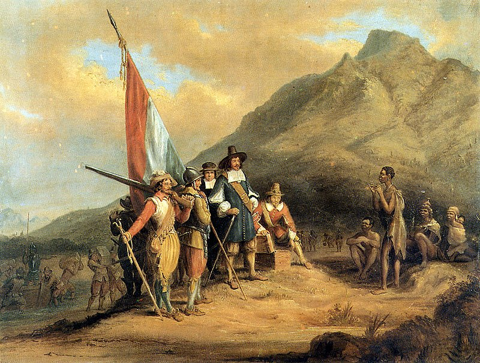

Этногенез африканеров
В 1652 году Ян ван Рибек, служащий Голландской Ост-Индской компании, вместе с группой поселенцев высадился на побережье современного Мыса Доброй Надежды. Данное название этот мыс получил по одноимённому поселению, основанному голландцами. Со временем оно утеряло своё название, став просто Капстадом - "городом мыса". Ныне Кейптаун, это один из ключевых городов ЮАР, не только экономический центр, но и одна из культурных столиц для африканеров

Эта территория была достаточно пустынная по меркам Африки, а потому здесь был повторён скорее американский колонизационный опыт: толпы голландцев, немцев и фламандских и французских протестантов, привлекаемые обещаниями богатых земельных наделов, хлынули на эти земли. Из части поселенцев, австронезийских завозных рабов и немногочисленного коренного населения выделилась так называемая группа "цветных" - отличавшихся от белых колонистов по цвету кожи людей, говоривших, тем не менее, на африкаансе при различавшемся влиянии других языков.
Африкаанс начал складываться сразу же после прибытия первых поселенцев. Изначально он был диалектом нидерландского языка, из которого родились креолизированные смеси этого языка, языков местных чернокожих и азиатских языков. Собственно, голландский язык оставался единственной литературной нормой даже после того, как англичане захватили колонию.
В этот момент колонистское сообщество раскололось: часть из них, белые фермеры и скотоводы, начали бегство из колонии вглубь континента. Причиной бегства были ряд законов, косвенно ущемлявших права буров, и конкуренция с поддерживаемыми метрополией английскими колонистами. Ушедших позже окрестили бурами (от нидерл. "boeren" - крестьяне), а оставшихся - в основном цветных и жителей Капстада - капскими голландцами. Африканеры и буры в частности оказывали сопротивление разной степени интенсивности британцам вплоть до провозглашения независимости Южноафриканской республики
В таких условиях и сложилась национальная идентичность африканеров.
Главная страница.